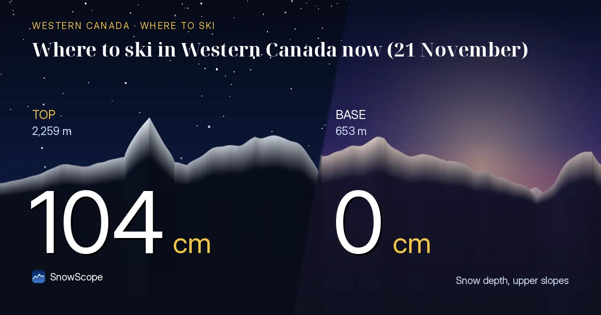
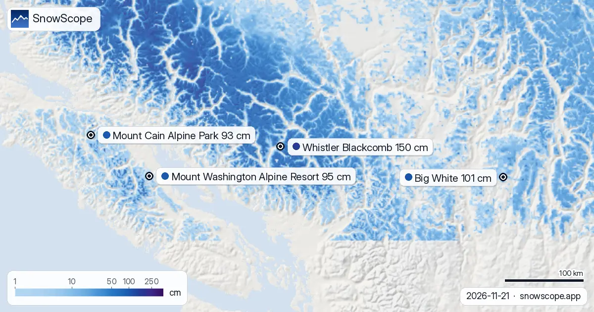

150 cm at Whistler Blackcomb: where to ski in Western Canada now (21 November)
150 cm on the upper slopes: that is why Whistler Blackcomb heads our list. Snow on the ground, snow from the last 72 hours, snow still to come: together they point to Whistler Blackcomb, Mount Washington Alpine Resort and Mount Cain Alpine Park. The deepest snowpack of this group is at Whistler Blackcomb, about 150 cm on the upper slopes; next are Big White 101 cm and Mount Washington Alpine Resort 95 cm. Snow in the mountains is water held back for spring: what falls now feeds rivers and reservoirs later.
See the live snow forecast for Whistler Blackcomb in the SnowScope appSnow depth, powder alerts and the 3D map, free.
Snow still to come
By 24 November the forecast adds 33 cm at Whistler Blackcomb, 76 cm at Mount Washington Alpine Resort and 57 cm at Mount Cain Alpine Park to the snowpack.
Forecasts a few days ahead can change: look at the map again the day before you travel.
| Resort | Snow depth | New snow, 72 h | Coming, next days | Top |
|---|---|---|---|---|
| Whistler Blackcomb | 150 cm | 0 cm | 33 cm | 2,259 m |
| Mount Washington Alpine Resort | 95 cm | 1 cm | 76 cm | 1,569 m |
| Mount Cain Alpine Park | 93 cm | 0 cm | 57 cm | 1,616 m |
| Big White | 101 cm | 0 cm | 2 cm | 2,271 m |

Against past winters
At about 1,456 m, Whistler Blackcomb has 61 cm today; a normal 21 November has 122 cm there.
Only one winter in ten has more than 182 cm on this date.
A week ago the same spot had 48 cm.
In past winters the best snow at Whistler Blackcomb usually came mid-March / late March.
A slow start is common and says little about January; for now the highest lifts and the runs with snowmaking are the safe choice.
Day by day at Whistler Blackcomb: Sunday 22 November 4 cm; Monday 23 November 2 cm; Tuesday 24 November 27 cm.
Height by height at Whistler Blackcomb: 653 m 0 cm on the ground, 1 cm more in the next 7 days; 1,456 m 48 cm on the ground, 13 cm more in the next 7 days; 2,259 m 104 cm on the ground, 15 cm more in the next 7 days.
Height and the snow line
At Whistler Blackcomb the freezing level reaches 500 m to 1,290 m on 21 November: lower down the snow may turn wet, higher up it stays cold.
South-facing slopes take the most sun and melt first; high, north-facing slopes keep their snow the longest.
Where the snow is best
The last clear snow map of Whistler Blackcomb, on 20 November, shows the slopes covered in snow.
On 19 November, its last clear day, the snow map showed snow covering Mount Washington Alpine Resort.
Height changes everything at Mount Cain Alpine Park: SnowScope shows 4 cm at the base (1,190 m), 21 cm at mid-mountain (1,403 m) and 66 cm at the top (1,616 m). The last clear snow map of Mount Cain Alpine Park, on 19 November, shows the slopes covered in snow.
Safety first
Before you ski off-piste or go touring, read the official avalanche bulletin (links below).
Tips for skiers
- Snow on the map does not mean a resort is open: check lifts and opening dates on the resort's website.
- A storm covers a whole valley, not only the famous resort. Smaller areas nearby often got similar snow: compare them on the map.
- Early-season snow is thin. Stay on open, groomed pistes: rocks and grass can hide just under the surface.
- In dry mountains like the Atlas, snow lasts on high, north-facing slopes and melts first on the sunny side. Follow the shade.
- Get a powder alert in the SnowScope app to know when Whistler Blackcomb gets fresh snow.
About these numbers
Resort snow depths are the deepest snow on the resort's upper slopes on the date shown; they are estimates for an area, not a measurement at one point. Forecasts can change. Always read the official avalanche bulletin before going off-piste.
Official avalanche bulletins: Avalanche Canada
Cite this report
For research, teaching or the press: the numbers and charts are free to reuse under CC BY 4.0 with this citation.
SnowScope (2026), 150 cm at Whistler Blackcomb: where to ski in Western Canada now (21 November), https://snowscope.app/blog/en/2026/11/western-canada-where-to-ski-best-snow-21-november-2026.html, accessed 2026-11-21
SnowScope (Atlas Labs). (2026, November 21). 150 cm at Whistler Blackcomb: where to ski in Western Canada now (21 November). SnowScope snow reports. https://snowscope.app/blog/en/2026/11/western-canada-where-to-ski-best-snow-21-november-2026.html
BibTeX
@misc{snowscope2026westerncanadawheretoskib,
author = {{SnowScope (Atlas Labs)}},
title = {150 cm at Whistler Blackcomb: where to ski in Western Canada now (21 November)},
year = {2026},
month = nov,
howpublished = {\url{https://snowscope.app/blog/en/2026/11/western-canada-where-to-ski-best-snow-21-november-2026.html}},
note = {Published 2026-11-22 10:03 UTC; accessed 2026-11-21}
}· CC BY 4.0 · Methods, data and tools →
Whistler Blackcomb: snow and temperature by height, this winter vs last (tools) →
Follow Whistler Blackcomb
Free: a message when fresh snow is coming, and the forecast every morning.
More snow reports

At Big White on 15 November, the upper slopes hold 68 cm near the summit while the base remains bare; an extreme vertical gradient typical of early season.

Whistler Blackcomb holds 116 cm on the upper slopes as of 12 November, with 83 cm forecast over the next three days. Mount Washington Alpine Resort leads the region at 162 cm.

Mount Washington holds 145 cm on 8 November, the deepest in Western Canada, but the freezing level will climb above the summit by 11 November.